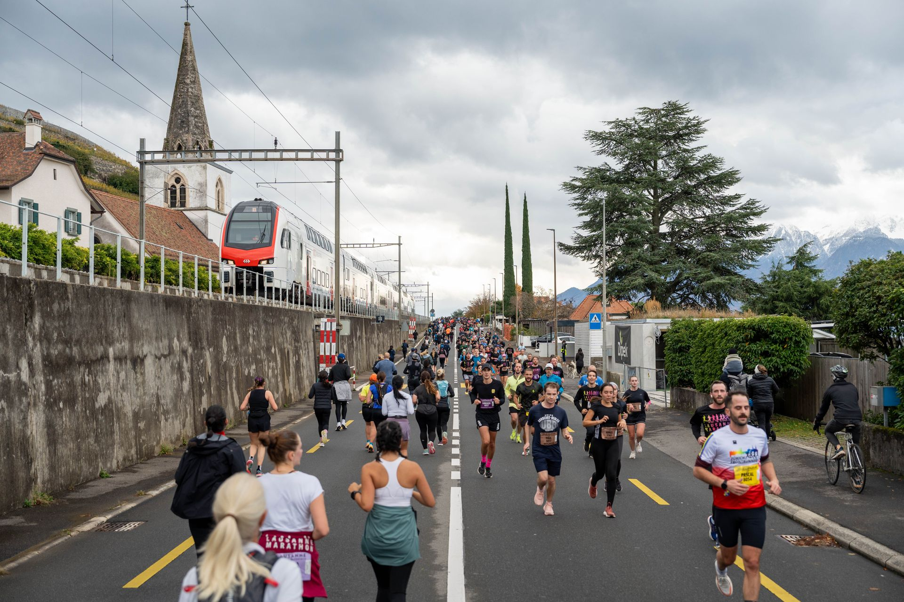
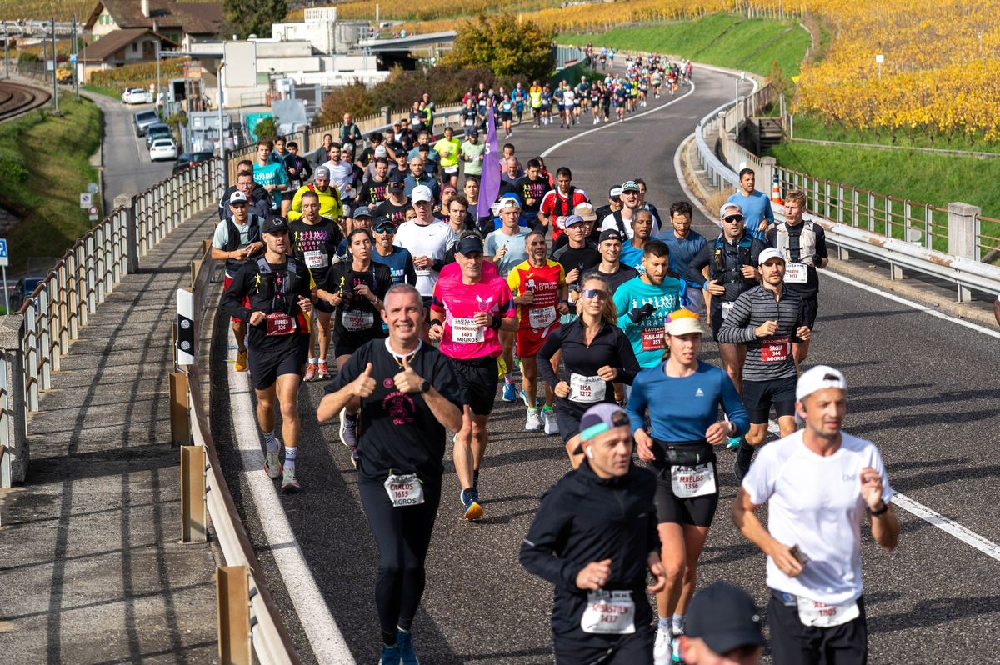
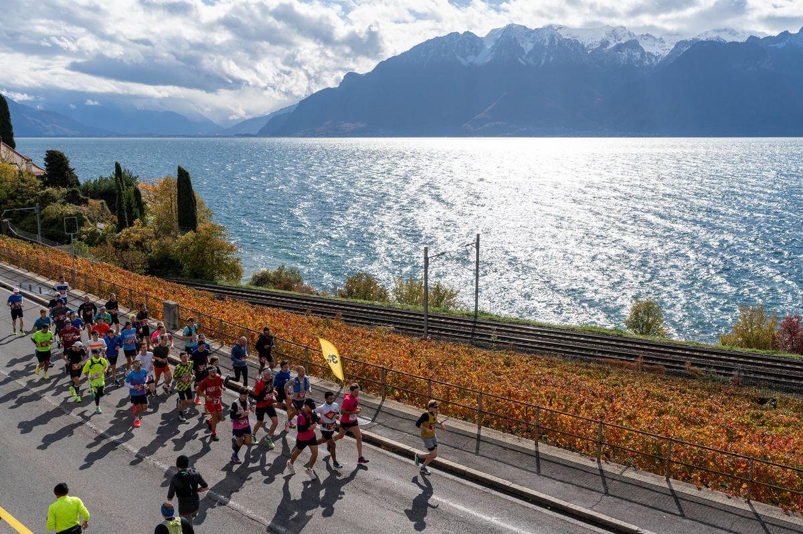
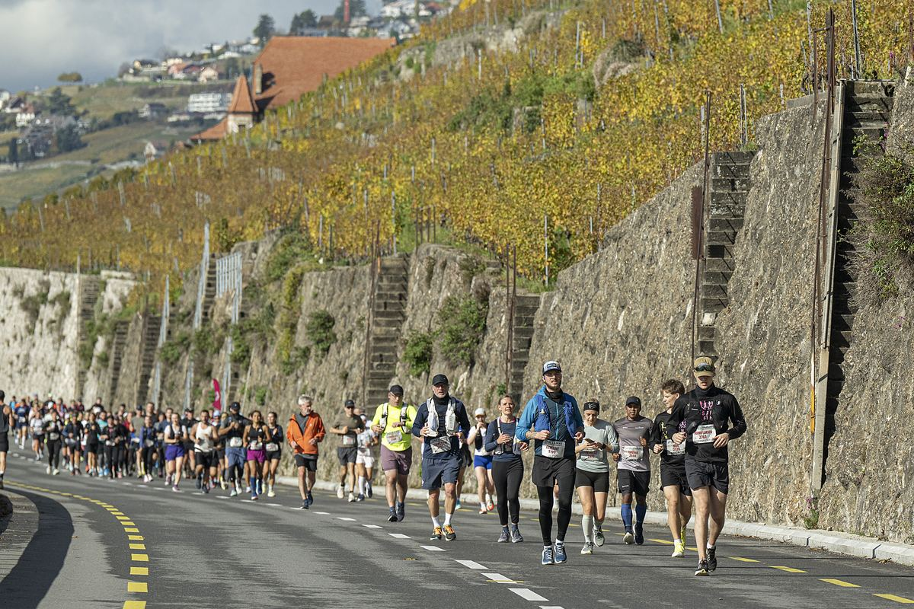
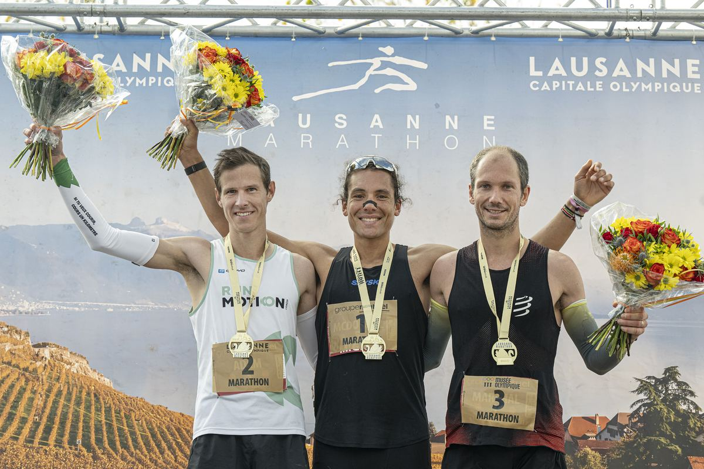
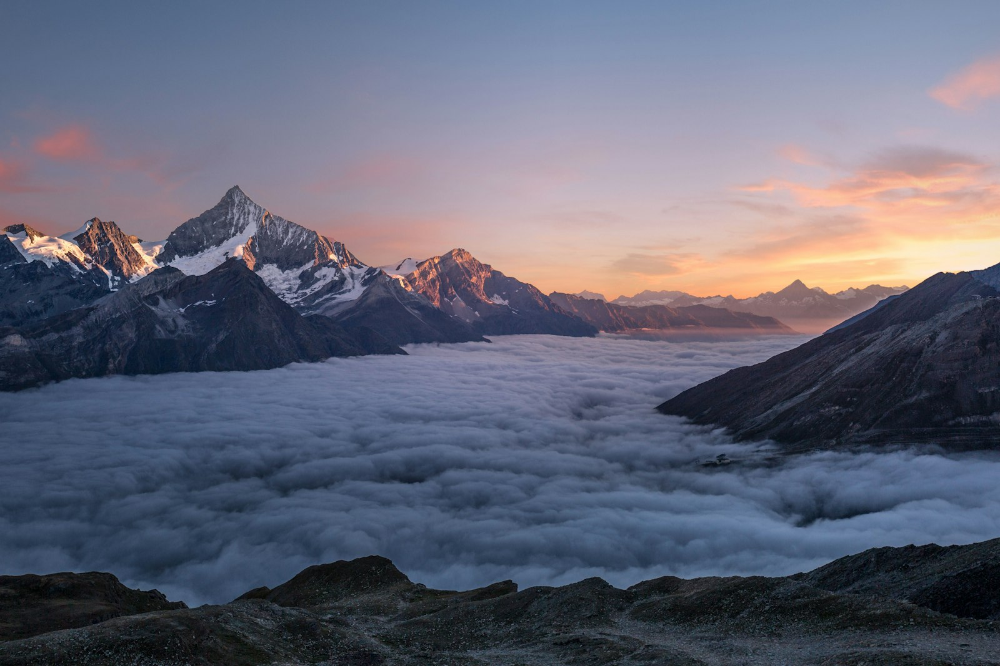
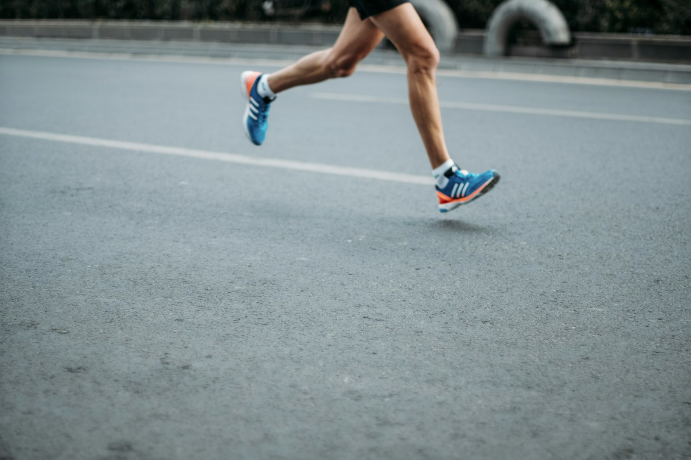
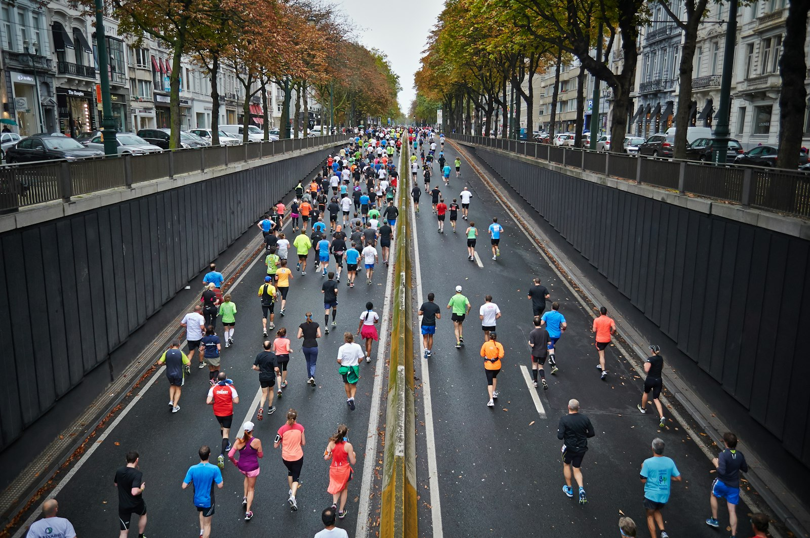
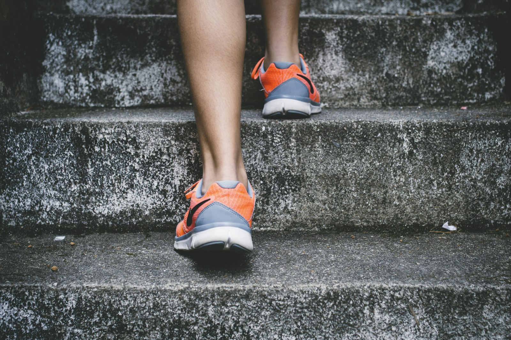
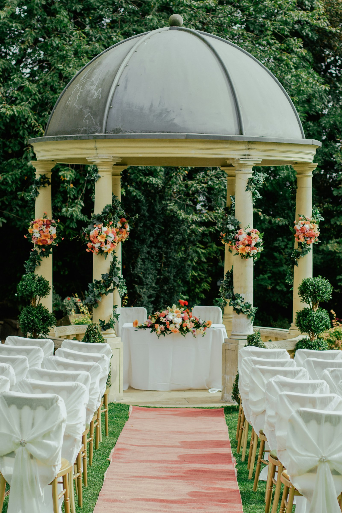

Au bord du Léman, le rendez-vous de l’automne.
Pré-inscriptions ouvertes pour 2027. L’édition 2026 est sold out. Découvrez les parcours, le programme du week-end et les infos coureurs.
Photo : Lausanne Marathon
Choisis ta distance
Quatre formats, un même décor : le lac, Lavaux et l’arrivée à Bellerive.
Marathon
De Lausanne à la Riviera vaudoise et retour, entre lac et vignobles.
Semi-marathon
Direction Cully puis retour vers Bellerive, le long du Léman.
10 km course
Un format accessible entre Lausanne et Lutry, arrivée à Bellerive.
Walking & Nordic Walking
Marche sans bâton ou nordic walking, sur le même esprit de parcours.
Pose ta question
Assistant d’exemple : réponses tirées des pages officielles, avec lien source.
Tout pour le week-end de course
Parcours, horaires, dossards et checklist réunis dans une navigation claire.
Parcours
Carte interactive le long du Léman, ravitaillements officiels et profil d’altitude.
Programme
Temps forts autour de la course, d’après les pages officielles 2026 (à confirmer pour 2027).
Partenaires
Partenaires officiels du Lausanne Marathon, présentés par niveaux tels que sur le site officiel.
Le parcours en images
Lausanne, Ouchy, Lutry, Cully, Lavaux et le Léman.











Ils rendent la course possible
SPONSOR PRÉSENTATEUR
SPONSOR PRÉSENTATEUR Groupe Mutuel
Groupe MutuelPresenting sponsor officiel du Lausanne Marathon (site officiel). Groupe Mutuel accompagne l’événement en tant que partenaire titre. groupemutuel.ch